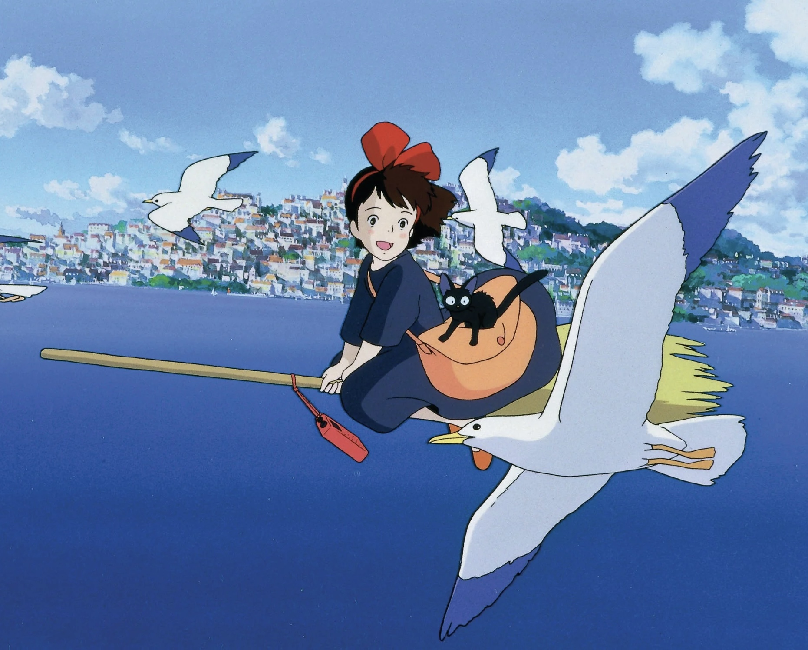
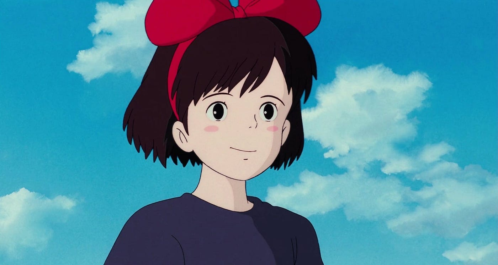
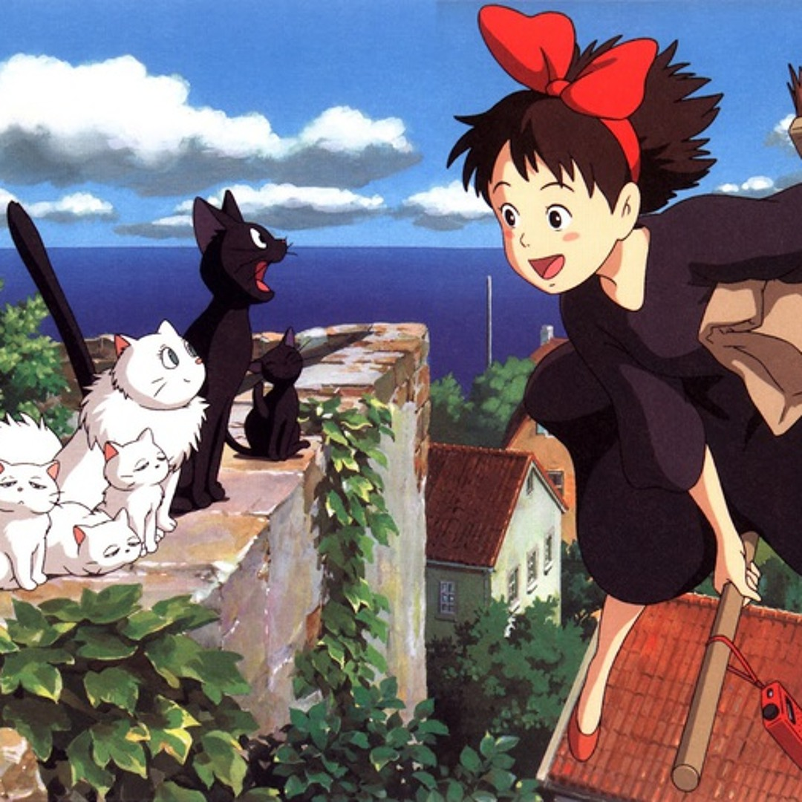
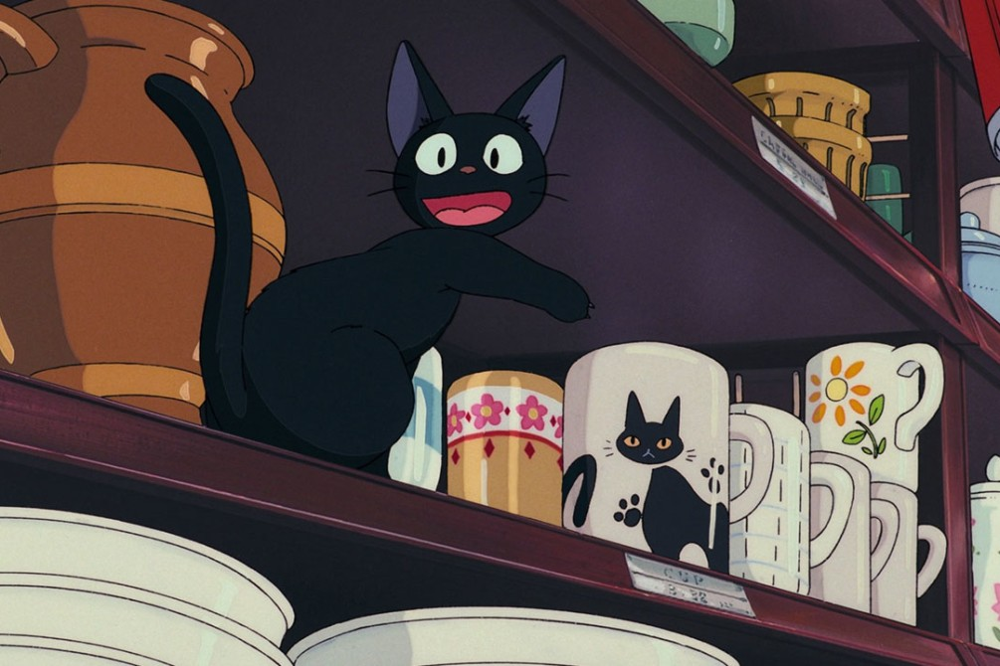
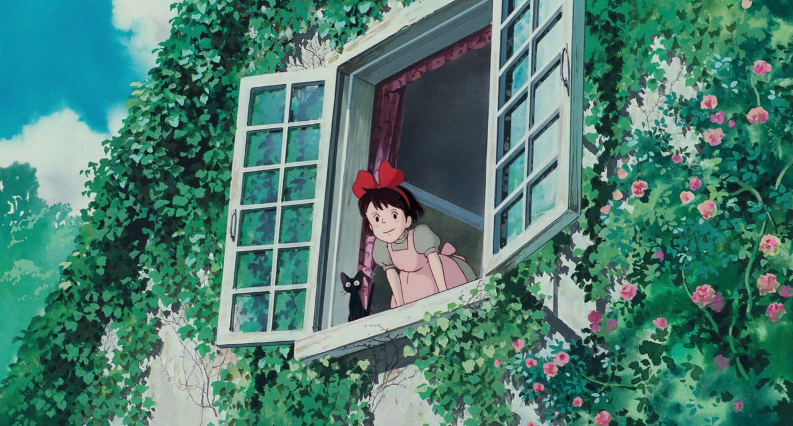

Kiki's Delivery Service
Kiki
As part of her witch’s tradition, at 13, Kiki leaves home to spend a year living independently in a new town. She settles in a seaside city, where she starts a flying delivery service using her broomstick. Kiki is friendly, hardworking, and eager to fit in, though she faces her fair share of challenges, from self-doubt to losing her magical abilities temporarily. Her journey is about growing up, finding her place in the world, and learning the importance of perseverance and self-reliance.





